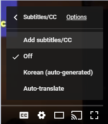
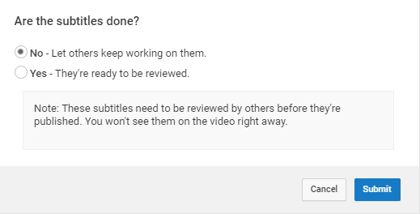

Youtube를 이용해서 자막 만들기
Youtube 커뮤니티 자막 편집이 2020년 9월 28일 이후 지원중단되었습니다. 하단 내용은 더 이상 유효하지 않습니다.
번역 또는 텍스트 변환에 참여하고 싶은 동영상으로 이동합니다. 플레이어에서 톱니바퀴 아이콘을 선택하고, 자막 > 자막 추가를 선택합니다.

동영상의 언어를 설정합니다. (보통 되어 있습니다.)

유튜브에서 자동으로 만들어준 자막이 생겼을 겁니다. 자동 생성된 자막을 클릭

자막의 타이밍은 두 가지 방법으로 수정할 수 있습니다. 왼쪽에서 타이밍의 시간을 바꿔서 수정하거나, 영상 아래쪽의 슬라이드바를 조절하여 수정할 수 있습니다.

작업은 일정 시간마다 자동 저장이 됩니다. 제출 버튼을 누르면 작업의 종료 여부를 묻고, 작업이 끝나셨으면 예를 눌러서 작업물을 제출해주시고, 그렇지 않다면 아니요를 선택하시고 나중에 이어서 작업하실 수 있습니다.
자막 발행
제출을 한 영상은 준비위원회의 리뷰를 거쳐 자막이 발행되거나, 추가 작업이 필요하다면 설명과 함께 반려될 수 있습니다.
준비위원회는 제출된 자막은 Pycon Korea 계정으로 접속하여 확인할 수 있습니다. (Creater Studio > Translations & Transcriptions 메뉴)
In Review 탭의 영상은 자막 작업은 완료가 된 상태이고, 리뷰를 한 후에 발행할 수 있습니다.
자막의 발행이 완료되면 Published 탭에서 해당 영상을 확인할 수 있습니다.